1. Página Inicial
Nome do Projeto
Sistema Financeiro OPCTEC — módulo Financeiro do libcurso (HUTEC/UEL).
Objetivo
Fornecer aos gestores da HUTEC/UEL um conjunto de ferramentas para registrar, classificar e automatizar os lançamentos contábeis dos cursos e eventos, garantindo rastreabilidade, conciliação e apoio à tomada de decisão.
Breve Descrição
Módulo web integrado ao sistema libcurso que implementa Plano de Contas, Centro de Custo, Rateios, Fontes de Recurso e Lançamentos Contábeis, além de motores automáticos de Contabilização (a partir de pagamentos) e Catálogo Contábil (bootstrap de eventos).
2. Sobre o Projeto
Problema que o sistema busca resolver
A gestão contábil dos cursos e eventos da HUTEC-UEL era realizada em planilhas externas, com registro manual de cada pagamento, cálculo de taxas por meio de pagamento (PIX, cartão, boleto), distribuição de percentuais para taxas institucionais (Taxa HUTEC, Taxa Direção UEL) e conciliação posterior de forma retrabalhosa. Esse cenário produzia:
- Alto risco de erro humano nos lançamentos e rateios;
- Dificuldade de conciliar receitas e despesas por evento;
- Ausência de um Plano de Contas padronizado por gestor;
- Falta de rastreabilidade entre pagamento → lançamento → conta contábil.
O Sistema Financeiro OPCTEC endereça esses pontos oferecendo um cadastro estruturado do Plano de Contas, um motor de Contabilização que gera lançamentos automáticos a partir dos pagamentos aprovados e um Catálogo Contábil que inicializa a estrutura contábil de um novo evento a partir de um modelo padrão ou de outro evento do mesmo gestor.
Tecnologias utilizadas
Arquitetura / Descrição resumida da solução
O sistema segue a arquitetura do libcurso: MVC + Command Pattern, com camadas bem definidas:
- Controller (
Gerenciar*AC.php): recebe ações do usuário e orquestra o fluxo; - Domain (
Nome.php+NomeVO.php): entidades e validadores de negócio; - DAO (
NomeDAO.php): persistência via ADODB sobre MySQL; - View (
view/admin/Gerenciar*.php): renderização das telas administrativas.
O menu area_admin_menu_financeiro.php confirma a hierarquia: a aba Financeiro
possui 4 subabas (Integrações, Contabilidade, Fiscal, Configuração), e o escopo deste estágio é a
subaba Contabilidade. Motores automáticos (Contabilização e Catálogo Contábil) operam
diretamente por SQL, sem camadas de domínio próprias.
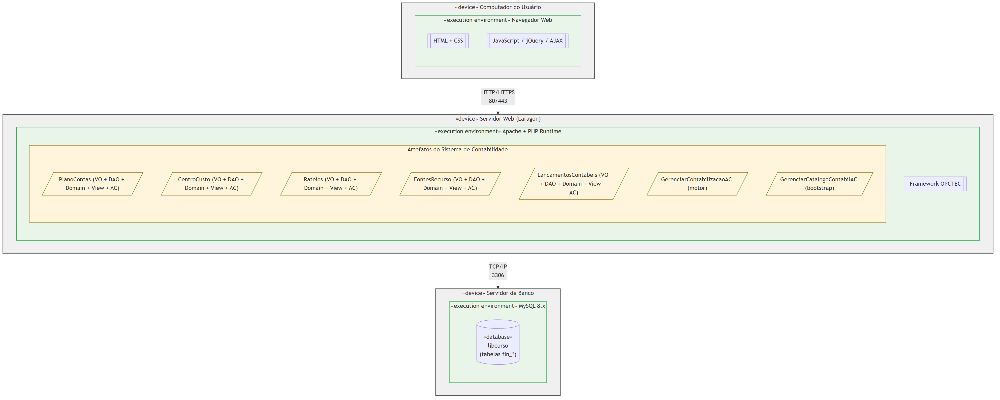
3. Casos de Uso e Cronograma de Desenvolvimento
3.1 Casos de Uso Previstos
UC01 — Gerenciar Plano de Contas
Permite ao gestor cadastrar, editar e excluir contas contábeis do evento, definindo cada conta como Analítica (aceita lançamento) ou Sintética (agrupadora). A exclusão só é permitida se a conta não possuir filhos.
UC02 — Gerenciar Centro de Custo
Permite cadastrar centros de custo utilizados para segregar receitas e despesas por área ou finalidade dentro do evento.
UC03 — Gerenciar Rateios
Configura regras de rateio (percentuais e sub-rateios) aplicadas automaticamente na contabilização — por exemplo, Taxa HUTEC 10% e Taxa Direção UEL 10% com sub-rateios por curso.
UC04 — Gerenciar Lançamentos Contábeis
Registro manual ou automático de créditos e débitos nas contas do plano, com
origemLancamento = MANUAL ou PAGAMENTO_AUTOMATICO, respeitando o bloqueio de
períodos fechados.
UC05 — Gerenciar Fontes de Recurso
Cadastro das origens de recurso financeiro (ex.: PAGSEGURO, ITAU, CAIXA) usadas para classificar de onde vem o dinheiro em cada lançamento.
UC06 — Contabilização Automática
Motor invocado a partir da tela de Lançamentos. Para cada pagamento aprovado gera exatamente 2 linhas contábeis (crédito na receita + débito da taxa do meio de pagamento). É idempotente: reprocessar apaga somente linhas não conciliadas com origem PAGAMENTO_AUTOMATICO.
UC07 — Catálogo Contábil (Bootstrap)
Inicializa a estrutura contábil de um evento: pode COPIAR de outro evento do mesmo gestor ou aplicar o MODELO PADRÃO (22 contas, 3 fontes, 8 rateios pré-configurados baseados no balancete real da HUTEC). Não sobrescreve dados existentes.
3.2 Cronograma de Desenvolvimento
| # | Atividade / Caso de Uso | Início | Conclusão / Previsão | Status |
|---|---|---|---|---|
| 01 | Levantamento de requisitos | 01/04/2026 | 14/04/2026 | Concluído |
| 02 | Documento de Visão | 08/04/2026 | 21/04/2026 | Concluído |
| 03 | UCSpecs (4 casos de uso) | 15/04/2026 | 05/05/2026 | Concluído |
| 04 | Diagramas UML (DER, Classe) | 22/04/2026 | 12/05/2026 | Concluído |
| 05 | UC01 — Plano de Contas | 29/04/2026 | 19/05/2026 | Concluído |
| 06 | UC02 — Centro de Custo | 06/05/2026 | 19/05/2026 | Concluído |
| 07 | UC05 — Fontes de Recurso | 13/05/2026 | 26/05/2026 | Concluído |
| 08 | UC03 — Rateios | 13/05/2026 | 02/06/2026 | Concluído |
| 09 | UC04 — Lançamentos Contábeis | 20/05/2026 | 09/06/2026 | Concluído |
| 10 | UC07 — Catálogo Contábil (bootstrap) | 03/06/2026 | 16/06/2026 | Em andamento |
| 11 | UC06 — Contabilização (motor auto) | 10/06/2026 | 23/06/2026 | Em andamento |
| 12 | Testes de integração | 17/06/2026 | 30/06/2026 | Previsto |
| 13 | Documentação final | 24/06/2026 | 30/06/2026 | Previsto |
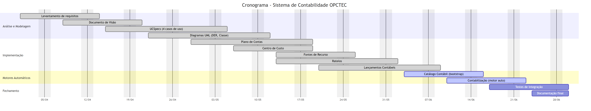
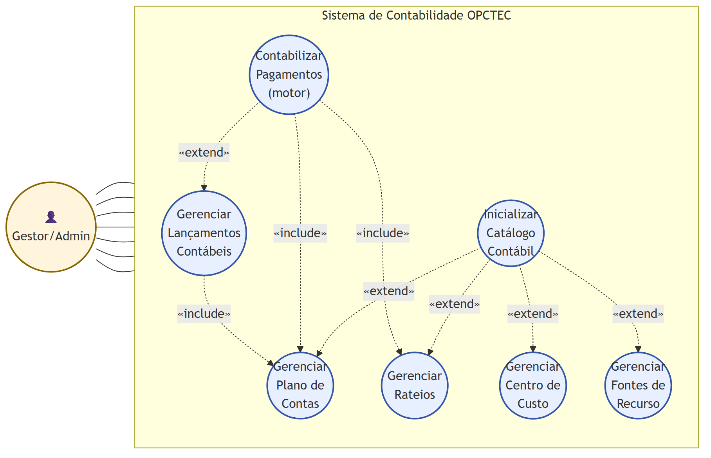
4. Documentação
Todos os diagramas produzidos durante o projeto estão disponíveis abaixo. Clique nas imagens para abrir em tela cheia.
4.1 Diagrama de Classes
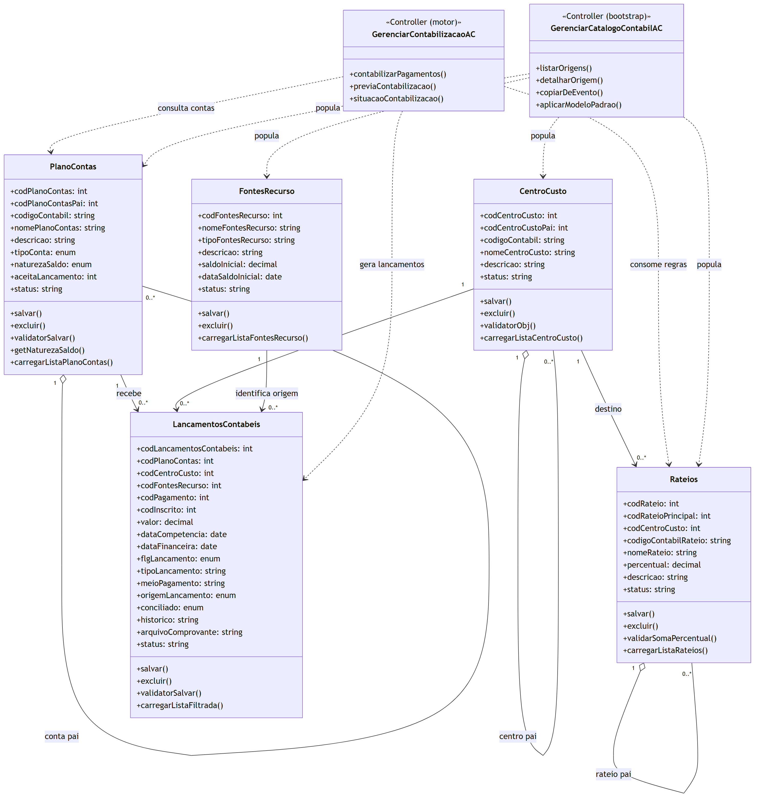
4.2 Diagrama Entidade-Relacionamento (DER)
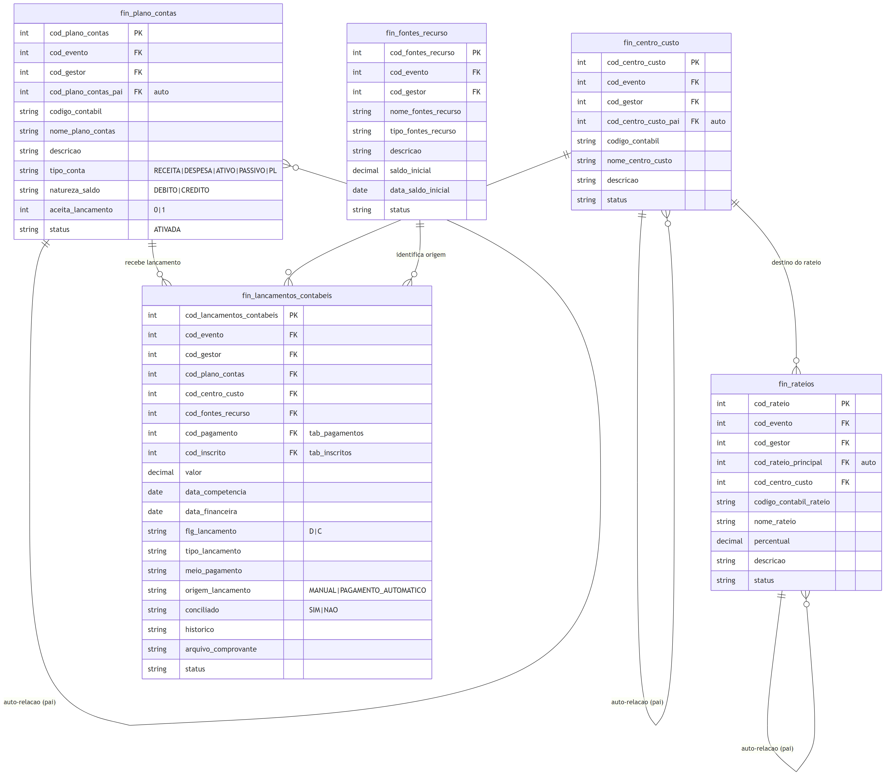
4.3 Diagramas de Sequência
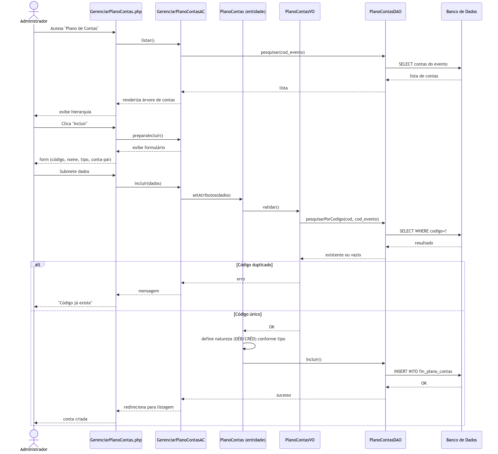
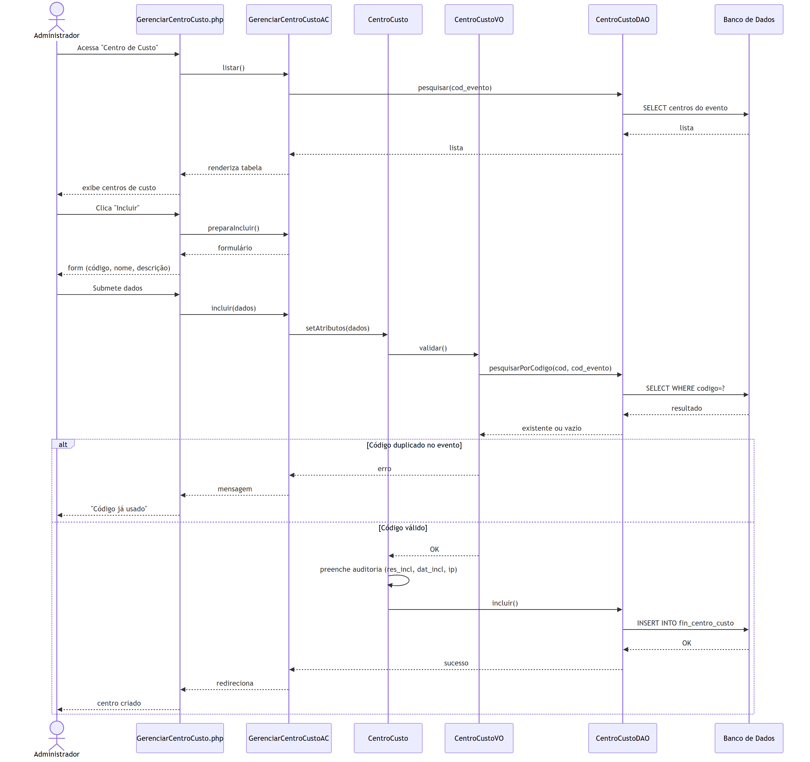
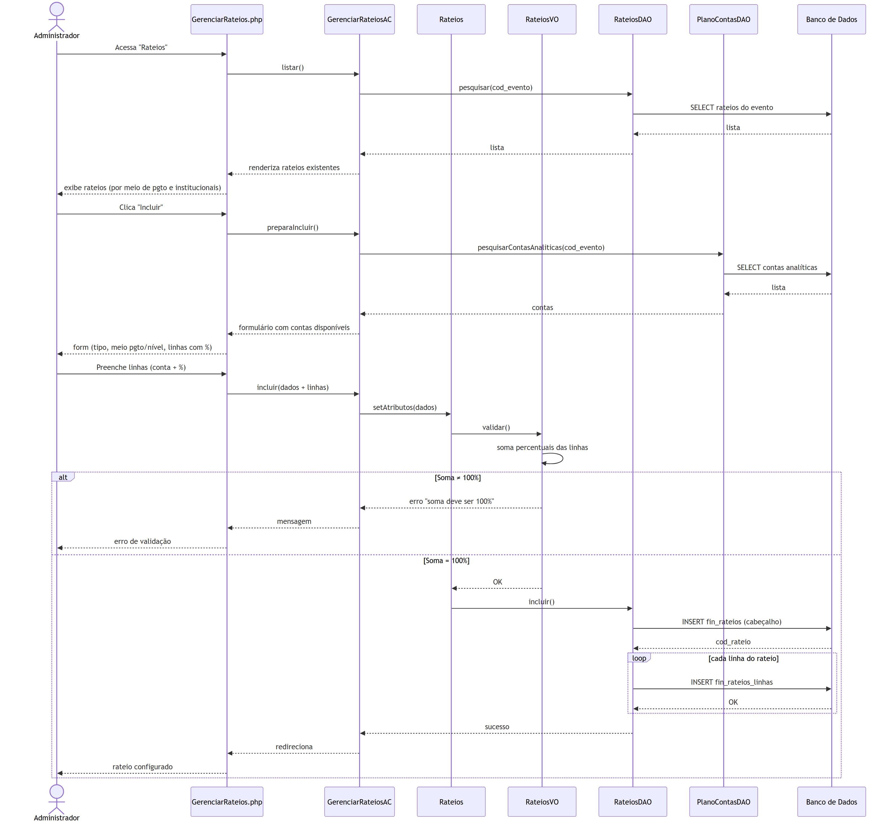
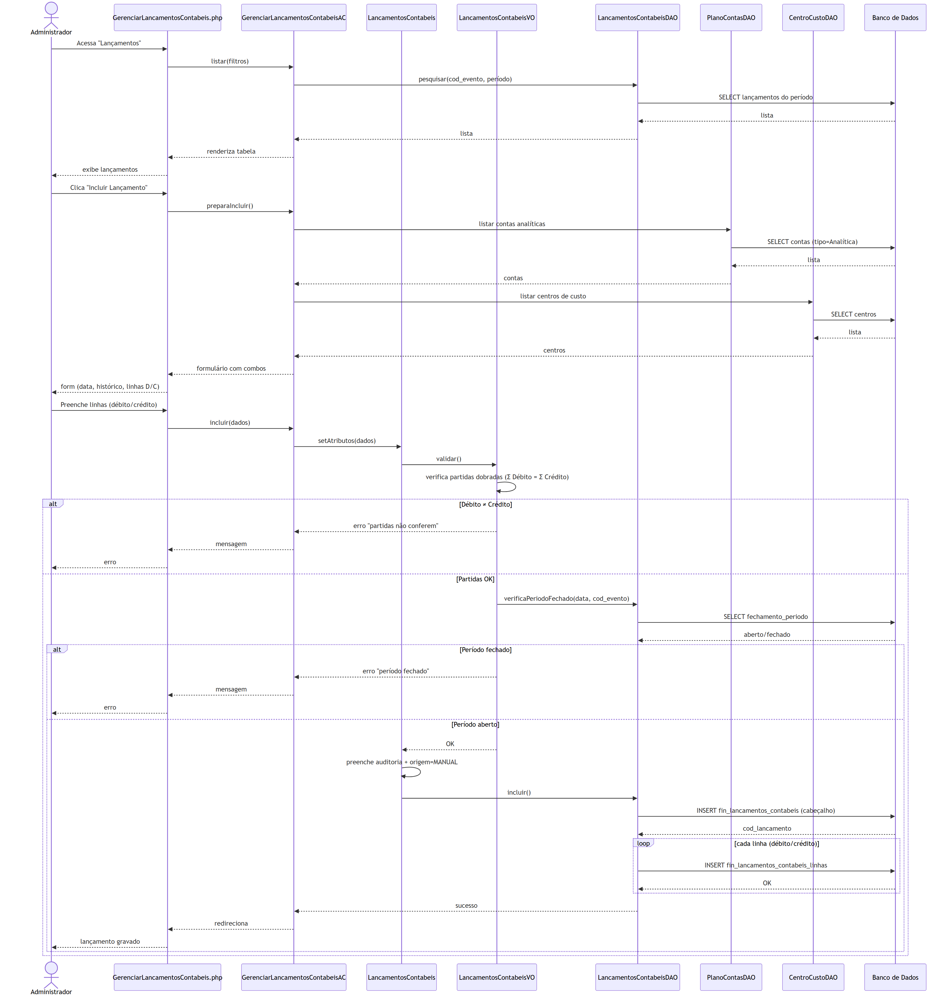
4.4 Diagramas de Estado
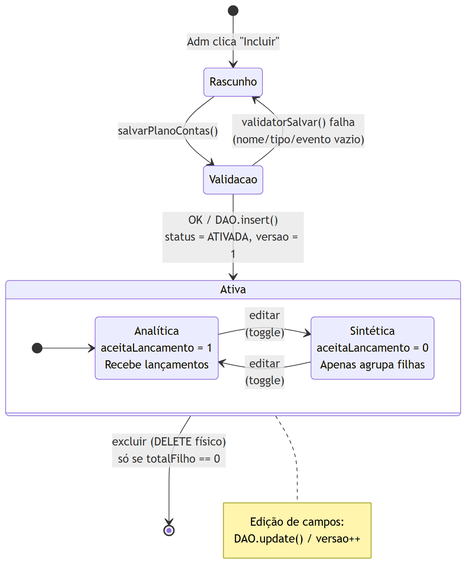
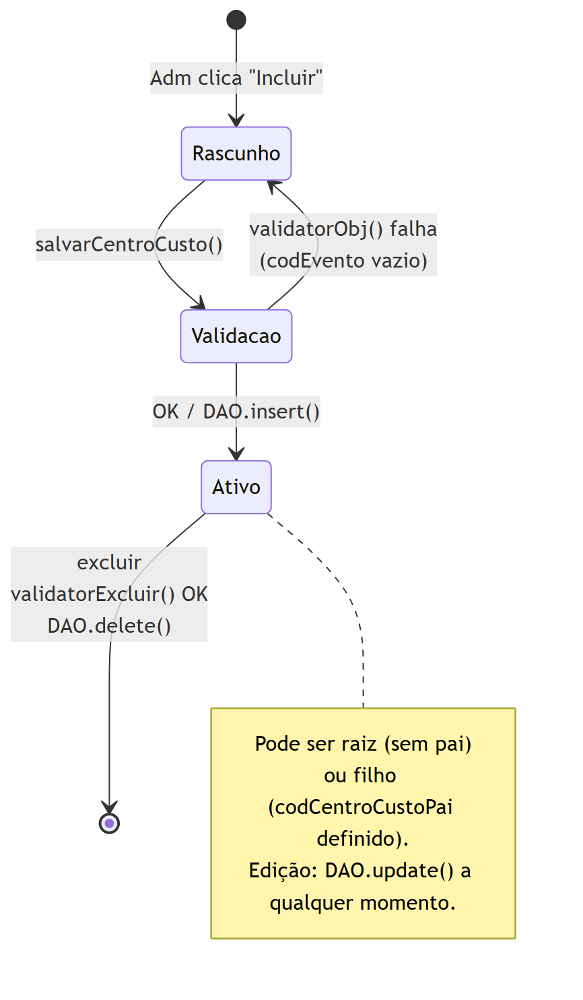
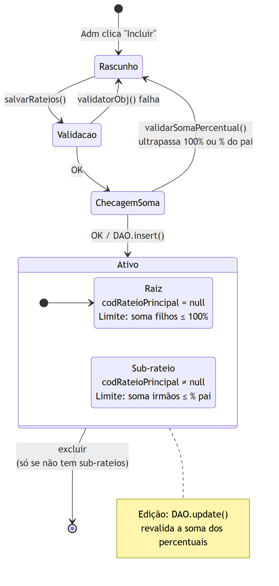
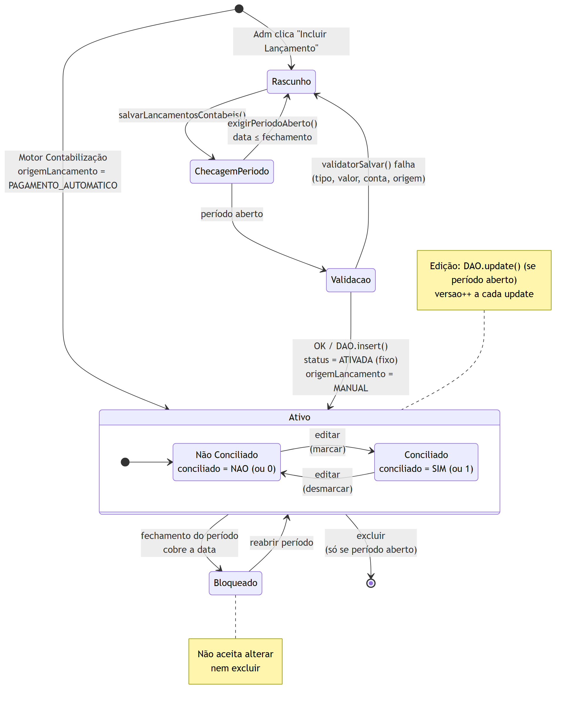
4.5 Outros Diagramas
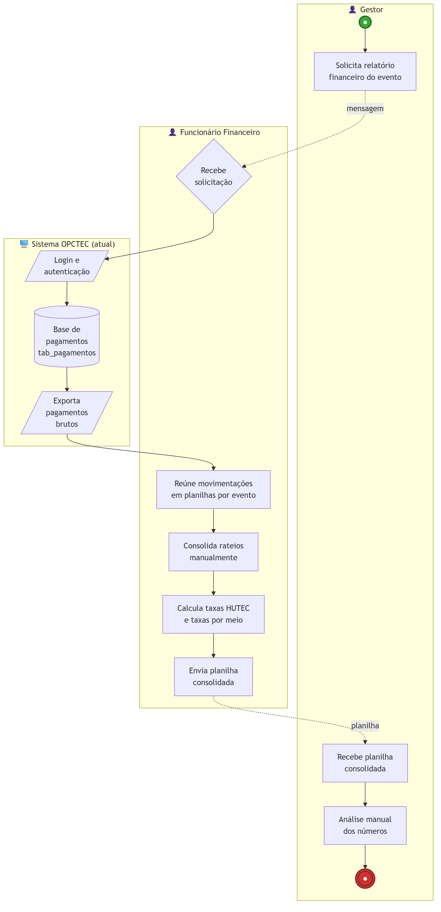
4.6 Especificações de Caso de Uso (UCSpec)
5. Telas e Vídeo Demonstrativo
5.1 Capturas de Tela das Principais Funcionalidades
1. Plano de Contas

01_plano_de_contas_lista.png)
01_plano_de_contas_form.png)2. Centro de Custo

02_centro_de_custo_lista.png)
02_centro_de_custo_form.png)3. Rateios

03_rateios_lista.png)
03_rateios_form.png)4. Lançamentos Contábeis

04_lancamentos_lista.png)
04_lancamentos_form.png)5. Fontes de Recurso

05_fontes_recurso_lista.png)
05_fontes_recurso_form.png)5.2 Vídeo Demonstrativo (máx. 5 min)
6. Relatório de Estágio
Relatório de estágio atualizado até a data de entrega do portfólio.
📄 Baixar Relatório de Estágio (PDF)7. Identificação do Aluno
Nome completo: Cauã Amaral Costeski Crosati
Matrícula: 241072056
Curso: Engenharia de Software
Professor(a) orientador(a): Robson Lacerda Zambroti
Instituição: Centro Universitário Filadélfia — UniFil
E-mail: caua.crosati@edu.unifil.br